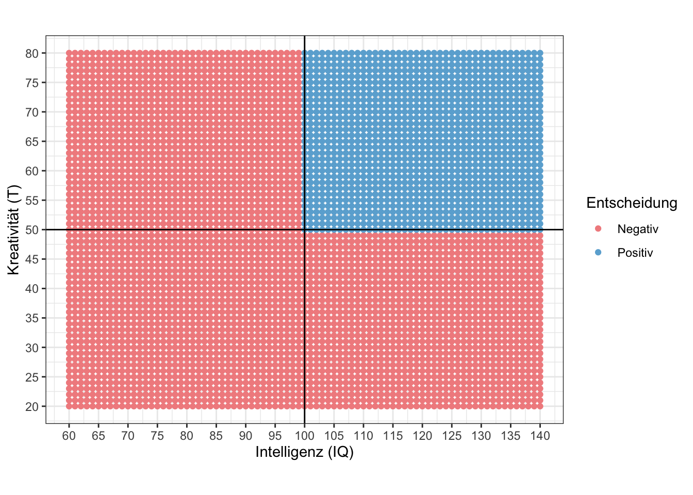
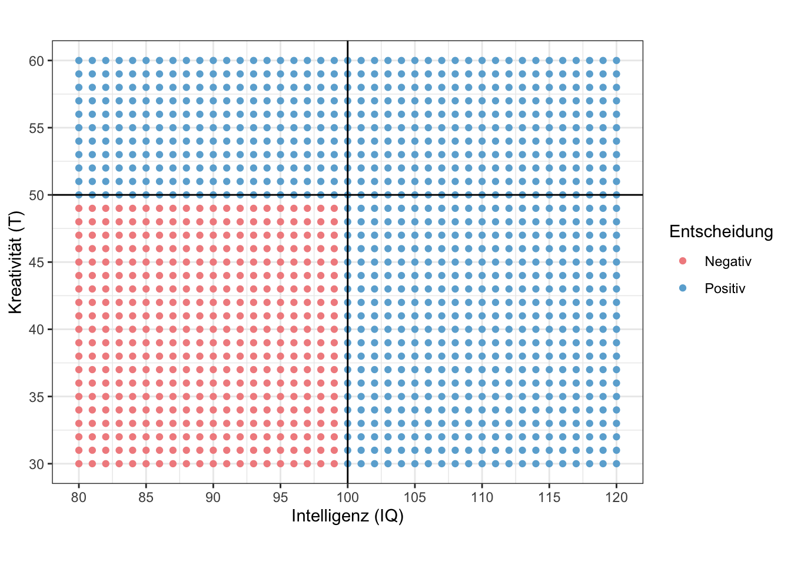
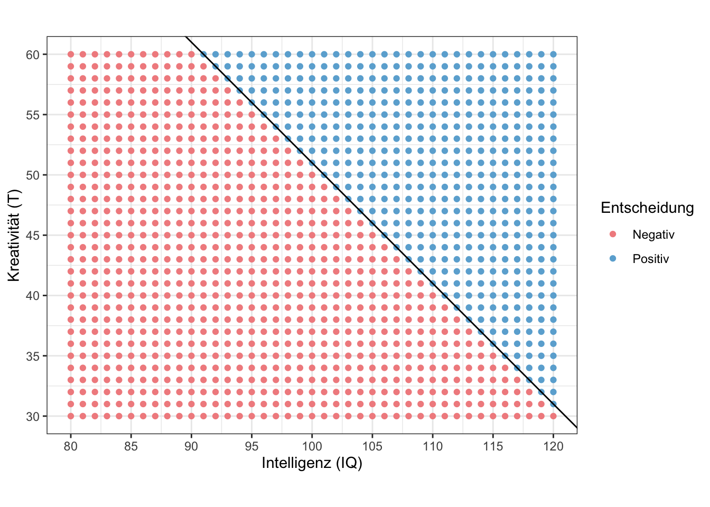
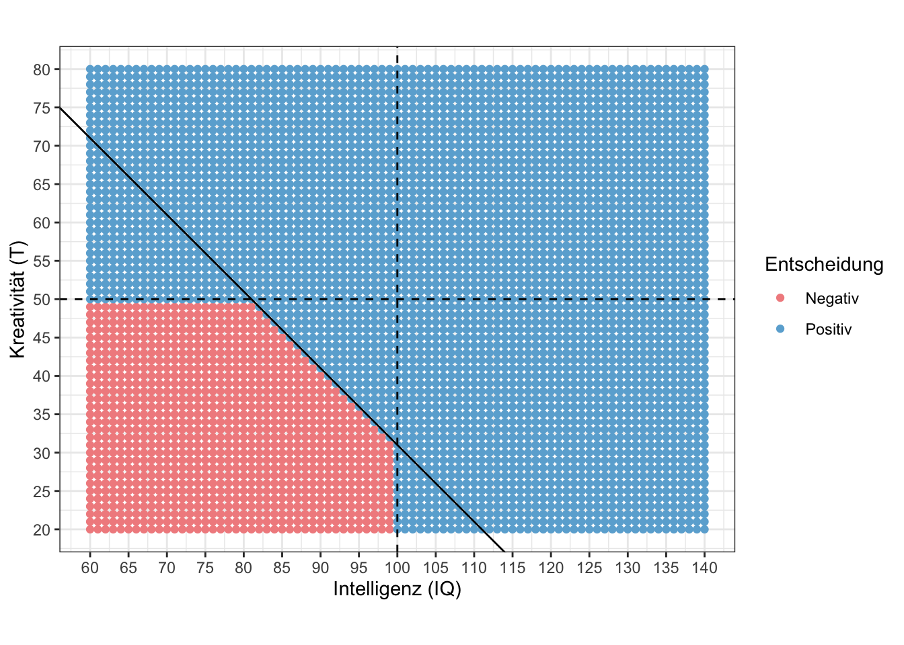
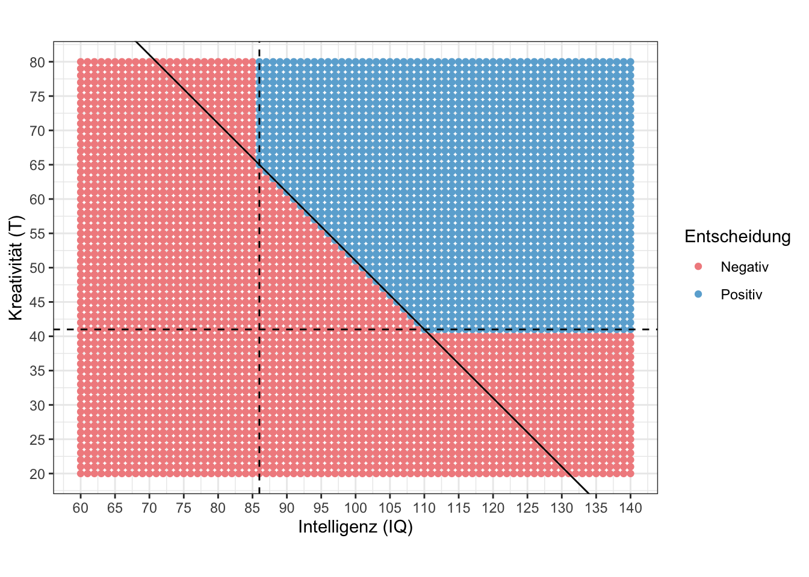

Der Diagnostische Prozess
Formulierung diagnostischer Hypothesen
Kriterien diagnostischer Hypothesen
In der Vorlesung haben Sie sechs Kriterien kennengelernt, die bei der Formulierung diagnostischer Hypothesen beachtet werden sollten.
Nennen Sie die sechs Kriterien zur Formulierung diagnostischer Hypothesen. Die Lösung finden Sie auf den Vorlesungsfolien.
Beachten Sie, dass diese Kriterien nicht vollständig analog für Forschungshypothesen gelten. Es wäre zum Beispiel ungewöhnlich, eine Forschungshypothese als Frage zu formulieren.
Fehler in diagnostischen Hypothesen erkennen
Welche Aspekte der folgenden Hypothesen zu gegebenen Fragestellungen sind problematisch? Wie könnten die Hypothesen besser formuliert werden?
Fragestellung: Ist Marijke hochbegabt?
Hypothese: Löst Marijke mindestens 84% der Aufgaben eines Intelligenztests für Hochbegabtendiagnostik?
Lösung
Normbezug fehlt
Fragestellung: Ist Mona geeignet, um eine Ausbildung als Fluglotsin zu beginnen?
Hypothese: Sind Monas Konzentrationsfähigkeit und Gewissenhaftigkeit überdurchschnittlich im Vergleich zur einer gleichaltrigen Referenzstichprobe?
Lösung
Nur ein Sachverhalt pro Hypothese
Nicht trennscharf genug, da kein Cutoff genannt wird
Fragestellung: Sind Verenas schlechte Klausurnoten auf Prüfungsangst zurückzuführen?
Hypothese: Weißt Verena im Vergleich zu Gleichaltrigen extreme Werte (\(|z|>1\)) in der Ängstlichkeitsfacette des NEO-PI-R auf?
Lösung
Bezug zur Fragestellung: Ängstlichkeit ist nicht gleich Prüfungsangst
Gerichtete Hypothese notwendig
Fragestellung: Sollte Emre auf Grund seiner depressiven Verstimmung eine Psychotherapie beginnen?
Hypothese: Weißt Emre depressive Symptome im klinisch relevanten Ausmaß auf?
Lösung
Unscharfe Hypothese
Normbezug fehlt
Cutoff fehlt
Fragestellung: Besteht bei Hubert Verdacht auf eine beginnende Demenz?
Hypothese: Ist Huberts Leistung in einem Gedächtnistest Test < 40 (T-Werte)?
Lösung
- Normbezug unvollständig, da keine Referenzgruppe genannt wird
Diagnostische Fragestellungen und Hypothesen formulieren
Häufig muss eine globale diagnostische Fragestellung zunächst in eine spezifischere Fragestellung überführt werden, bevor (eine oder mehrere) Hypothesen abgeleitet werden können. Zum Beispiel:
| Globale Fragestellung | Hat Erik die nötigen kognitiven Fähigkeiten für ein Kunststudium? |
| Spezifische Fragestellung | Ist Erik mindestens durchschnittlich intelligent und überdurchschnittlich kreativ? |
| Hypothese(n) | H1: Ist Eriks Leistung in einem Intelligenztest im Vergleich zu Gleichaltrigen mindestens durchschnittlich (IQ ≥ 100)? H2: Ist Eriks Leistung in einem Kreativitätstest im Vergleich zu Gleichaltrigen überdurchschnittlich (SW ≥ 110)? |
Spezifizieren Sie die folgende Fragestellung und leiten Sie eine oder mehr passende Hypothesen ab.
| Globale Fragestellung | Verfügt Sonja über die notwendigen Persönlichkeitseigenschaften um an einer 3-monatigen, winterlichen Arktis-Expedition teilzunehmen? |
| Spezifische Fragestellung | … |
| Hypothese(n) | … |
Entscheidungsregeln
Wenn mehrere Hypothesen zur selben diagnostischen Fragestellung aufgestellt wurden, müssen die Ergebnisse anhand zuvor definierter Entscheidungsregeln integriert werden. Sie haben in der Vorlesung verschiedene Typen von Entscheidungsregeln kennengelernt.
Bei Entscheidungen anhand von zwei Kriterien, lassen sich die Wertebereiche, in denen entweder eine positive oder eine negative Entscheidung getroffen wird, leicht in einem Plot darstellen:
Die konkrete Entscheidungsregel im Beispiel könnte auch so beschrieben werden:
Der Intelligenzwert muss mindestens 100 betragen und der Kreativitätswert muss mindestens 50 betragen.
Formal kann man die Bedingung, die erfüllt sein muss, um gewählt zu werden, auch so beschreiben:
\(IQ_{Intelligenz} \ge 100 \wedge T_{Kreativität} \ge 50\)
Da in der Regel zwei Bedingungen mit einem logischen Und verknüpft werden, handelt es sich um eine konjunktive Entscheidungsregel.
Benennen Sie für die folgenden Beispiele um welche Art Entscheidungsregel es sich handelt. Beschreiben Sie die konkrete Entscheidungsregel entweder verbal oder mathematisch.

Lösung
\(IQ_{Intelligenz} \ge 100 \vee T_{Kreativität} \ge 50\)
Oder-Regel

Der Punkt \((100, 51)\) liegt auf der schwarz markierten Geraden. Da Kreativität und Intelligez in der Entscheidungsregel gleichgewichtet werden, ist die absolute Steigung der Geraden \(1\).
Lösung
\(IQ_{Intelligenz} + T_{Kreativität} > 150\)
Kompensatorisch

Der Punkt \((99, 32)\) liegt auf der Geraden, die eine Steigung von \(-1\) hat.
Lösung
\((IQ_{Intelligenz} \ge 100 \vee T_{Kreativität} \ge 50) \vee (IQ_{Intelligenz} + T_{Kreativität} > 130)\)
Schwache Oder-Regel

Der Punkt \((100, 51)\) liegt auf der Geraden, die eine Steigung von \(-1\) hat.
Lösung
\((IQ_{Intelligenz} > 85 \wedge T_{Kreativität} > 40) \wedge (IQ_{Intelligenz} + T_{Kreativität} > 150)\)
Schwache Konjunktive-Regel
Untersuchungspläne
Finden Sie je ein Beispiel für die folgenden Untersuchungspläne:
Single screen
Nicht-sequenzielle Untersuchungsbatterie
Vorauswahl Untersuchungsplan (pre-reject)
Vorentscheidungs-Untersuchungsplan (pre-select)
Vollständig sequenzieller Untersuchungsplan